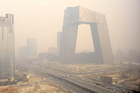

Coastline
· Bio creation & data ·
Sea Level is raising beacuse of global warming, so I want to build a platform to show how does it changed during the past, now, and future.
Sea Level is raising beacuse of global warming, so I want to build a platform to show how does it changed during the past, now, and future.
Air Pollution in China has affect lots of people's life. Children cannot go to school and lots of people get lung problem beacuse of it. I have an idea in mind to report the daily pollution index to let people to be more awared of it and try to help to reduce it.
Coffee is a major product of Columbia. We can build a platform to introduce the details about coffee in Columbia. This can let more and more people to know about the growth environment of coca beans in Columbia and the traditional technology of processing coffee beans etc. It also can be a trade platform. If people from other country would like to buy the original Columbia coffee, they can order directly from Columbia coffee makers.